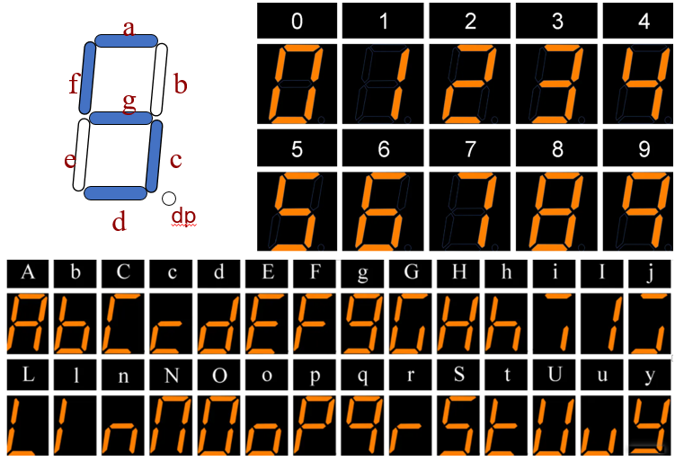
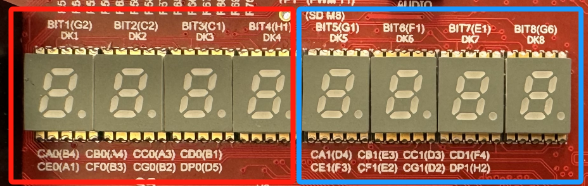

Digital Logic: Behavioral Modeling and Seven-Segment Display
Lab Objectives
- Master Verilog behavioral modeling methods (
alwaysblocks for describing combinational logic) - Master the use of
if-elseandcasestatements - Understand the operating principle of seven-segment displays (based on the EGO1 development board)
- Complete the design and on-board verification of a BCD-to-seven-segment decoder
1. Behavioral Modeling
1.1 What Is Behavioral Modeling?
Compared with structural modeling (connecting basic gates) and dataflow modeling (writing Boolean expressions), behavioral modeling is a higher-level approach. Its syntax is similar to high-level programming languages such as C. It implements functions by describing the behavior and algorithms of a circuit. However, Verilog describes hardware circuits rather than software programs, and synthesis tools automatically infer the underlying logic-gate circuits.
1.2 always Block (Combinational Logic)
In Verilog, behavioral modeling is mainly implemented through always blocks. For combinational logic, we use always @(*).
- Syntax:
Verilog
always @(*) begin
// Behavioral description statements (if-else, case, etc.)
end
-
Key Features (Common Mistakes — Please Remember!):
-
@(*)represents the sensitivity list. This means that whenever any signal read inside thealwaysblock changes, the combinational logic is recalculated and thealwaysblock is triggered once. -
A variable assigned on the left-hand side must be declared as type
reg! (This is a syntax requirement. Although in combinational logic it still synthesizes to a wire rather than an actual register.)module test( input x, output reg y ); always @(*) begin y = x; end endmodule
1.3 Comparison Between assign and always @(*)
| Comparison Item | Dataflow Modeling (assign) | Behavioral Modeling (always @(*)) |
|---|---|---|
| Assignment Target Type | Must be wire |
Must be reg |
| Typical Use Cases | Simple logic expressions, connections | Complex logic decisions, multiplexers, decoders |
| Supported Syntax | Ternary operator ? : |
if-else, case, for loops |
2. Conditional Control Statements
2.1 if-else Statement
Similar to C, it is used for prioritized conditional decisions.
Verilog
always @(*) begin
if (sel == 2'b00) begin
out = 1'b1;
end else if (sel == 2'b01) begin
out = 1'b0;
end else begin
out = 1'b1;
end
end
Note: In combinational logic using
if-else, anelsebranch must be included. Otherwise, the synthesis tool will infer an additional latch, which may cause serious timing problems during actual on-board operation.
2.2 case Statement
Used for multi-branch selection and commonly used in multiplexing circuits such as state machines and decoders. The branches do not have priority over one another and are evaluated in parallel.
Verilog
always @(*) begin
case (sel)
2'b00: out = 1'b1;
2'b01: out = 1'b0;
2'b10: out = 1'b1;
2'b11: out = 1'b1;
default: out = 1'b0; // A default branch must be included to prevent a Latch!
endcase
end
Note: A
defaultbranch must be included in acasestatement. Otherwise, the synthesis tool will infer an additional latch, which may cause serious timing problems during actual on-board operation.
3. Seven-Segment Display Principle (Based on EGO1)
3.1 Hardware Principle
A seven-segment display is essentially a display device composed of seven bar-shaped light-emitting diodes (LEDs) and one dot-shaped light-emitting diode (decimal point, DP). By controlling which LEDs are on or off, digits 0-9 and English letters can be displayed.
According to the EGO1 development board manual, the on-board seven-segment displays are common-cathode displays, meaning "HIGH level turns the segment on":

3.2 Pin Constraints
The 8 seven-segment displays on the EGO1 board are divided into left and right groups, with 4 displays in each group:
- Left-side segments
CA0~CG0andDP0 - The right-side group shares segment signals
CA1~CG1andDP1 - Each of the 8 seven-segment displays also has its own independent digit-select signal, corresponding to
BIT1~BIT8

This means that the 4 seven-segment displays within the same group share the same set of segment-select signals. What actually determines "which seven-segment display is currently turned on" is the display's own digit-select signal.
The pins related to the seven-segment displays on EGo1 are organized by label in the following tables.
3.2.1 Segment-Select Pins for the Two Groups
| Segment | Left Group Segment Label | FPGA Pin | Right Group Segment Label | FPGA Pin |
|---|---|---|---|---|
| a | CA0 |
B4 | CA1 |
D4 |
| b | CB0 |
A4 | CB1 |
E3 |
| c | CC0 |
A3 | CC1 |
D3 |
| d | CD0 |
B1 | CD1 |
F4 |
| e | CE0 |
A1 | CE1 |
F3 |
| f | CF0 |
B3 | CF1 |
E2 |
| g | CG0 |
B2 | CG1 |
D2 |
| dp | DP0 |
D5 | DP1 |
H2 |
This table shows that the 4 seven-segment displays on the left share the same CA0~CG0, DP0 segment signals, while the 4 displays on the right share the same CA1~CG1, DP1 segment signals. Therefore, if multiple digit-select signals within the same group are enabled at the same time, those displays will show the same content.
Important: The segment-select order here must strictly match the signal definition and bit ordering in your circuit. In other words, if the segment code is defined as
{a, b, c, d, e, f, g, dp}, the signals must be connected and assigned in the orderCA/CB/CC/CD/CE/CF/CG/DP. The order ofa~dpmust not be mixed up, otherwise incorrect segments will light up.
3.2.2 Eight Digit-Select Signals
| Name | Seven-Segment Display Label | FPGA Pin |
|---|---|---|
DN0_K1 |
BIT1 |
G2 |
DN0_K2 |
BIT2 |
C2 |
DN0_K3 |
BIT3 |
C1 |
DN0_K4 |
BIT4 |
H1 |
DN1_K1 |
BIT5 |
G1 |
DN1_K2 |
BIT6 |
F1 |
DN1_K3 |
BIT7 |
E1 |
DN1_K4 |
BIT8 |
G6 |
From this table, the left 4 seven-segment displays correspond to BIT1~BIT4, while the right group of 4 displays corresponds to BIT5~BIT8. In this lab, if you only want to turn on the first seven-segment display on the far left, you should enable BIT1.
Therefore, to turn on a particular seven-segment display, two types of signals must be configured at the same time:
- Segment-select signals (control what character is displayed): A seven-segment display contains seven segments
a, b, c, d, e, f, gand a decimal pointdp. For a common-cathode display, an FPGA output of HIGH (1) turns on the corresponding segment. - Digit-select signals (control which digit is active): Each of the 8 seven-segment displays has its own independent digit-select signal. Only when the digit-select signal of a particular display is set to 1 will that display show the character currently defined by the segment-select signals of its group.
You can think of it as:
- Segment select controls "what is displayed"
- Digit select controls "where it is displayed"
For example, to display the digit 5 on one digit in the right half, you need to:
- Output the segment code corresponding to digit
5on the segment-select pins of the right-side group - Set the digit-select signal corresponding to the target display to
1
If only the segment-select signals are set but no digit-select signal is enabled, no seven-segment display will actually light up. If multiple digit-select signals in the same group are enabled at the same time, those displays will show the same character, because they share the same group of segment-select signals.
Before testing on the board, check three things: whether the segment-code bit order is correct, whether the digit-select bit order is correct, and whether the digit-select and segment-select signals belong to the same group.
- The bit order of the segment-select signals must match the pin assignments. If the code defines
seg_out = {a,b,c,d,e,f,g}, thenseg_out[6]~seg_out[0]must be assigned to the correspondingCA~CGpins. The left-to-right order, bit indices, and physical pins in the code must match one another exactly. Otherwise, incorrect segments may light up or the displayed digit may be wrong.- The bit order of the digit-select signals must match the pin assignments. If the code defines
ans_out[7]as the leftmost seven-segment display andans_out[0]as the rightmost seven-segment display, then the pin constraints must also bind them in that order toBIT1~BIT8. Do not rely only on signal names. Make sure which physical display each bit in the code actually corresponds to.- The digit-select and segment-select signals must belong to the same group of seven-segment displays. The 8 seven-segment displays on the EGO1 board are divided into left and right groups. The 4 digit-select signals on the left can only be used together with the segment-select signals of the left group, while the 4 digit-select signals on the right can only be used together with the segment-select signals of the right group. If a digit-select signal for a left-side display is enabled while segment-code outputs are provided only to the right-side group, that display will not work properly.
3.3 Segment-Code Mapping Table (Truth Table)
Assume that the 7 segments of the seven-segment display (temporarily ignoring the decimal point) are ordered from the most significant bit to the least significant bit as {a, b, c, d, e, f, g, dp}. To display the digit "0", segments a,b,c,d,e,f must be turned on, while g and dp must be turned off. Therefore, the segment code is 8'b1111_1100.
For example:
| Displayed Character | Corresponding Input | Binary Segment Code {a,b,c,d,e,f,g} |
|---|---|---|
| 0 | 4‘b0000 | 7'b1111110 |
| 1 | 4‘b0001 | 7'b0110000 |
| 2 | 4‘b0010 | 7'b1101101 |
| 3 | 4‘b0001 | 7'b1111001 |
| ... | ... | ... |
4. Lab Exercise: BCD-to-Seven-Segment Decoder Design
- Module Name:
bcd_to_7seg - Input:
bcd_in(4-bit BCD code, range 0-9) - Output 1:
seg_out(7-bit segment-select output, connected to a~g) - Output 2:
ans_out(8-bit digit-select output, connected to BIT1~BIT8, used to select the seven-segment display) - Function Description: Use behavioral modeling (
casestatement) to convert a 4-bit BCD code into the corresponding seven-segment display code. If the input is an invalid value (such as 10-15), all segments are turned off. Use the first seven-segment display on the far left of the EGO1 board for display.
Step 1: Write the Design
Use always @(*) and a case statement to implement the decoding logic.
module bcd_to_7seg(
input [3:0] bcd_in,
output reg [6:0] seg_out, // {abcdefg} segment a: MSB(seg_out[6]), segment g:LSB(seg_out[0])
output [7:0] ans_out // ans_out[7] corresponds to the leftmost seven-segment display, ans_out[0] corresponds to the rightmost seven-segment display
);
assign ans_out = 8'b1000_0000; // Turn on the leftmost seven-segment display
always @(*) begin
case (bcd_in)
4'd0: seg_out = 7'b1111110;
4'd1: seg_out = 7'b0110000;
// complete your code
default: ....
endcase
end
endmodule
Hint: In addition to assigning values to the segment-select signals, remember to enable the digit-select signal of the first seven-segment display (set it to 1).
Step 2: Write the Testbench
Use the for loop learned previously to generate input stimuli from 0 to 9 and observe whether the waveform outputs the correct segment codes.
Step 3: Assign Pins and Verify on the Board
-
Bind
bcd_into 4 slide switches on the EGO1 development board. -
Bind the 7 bits of
seg_outto the corresponding segment pins of the left-side seven-segment display group.
set_property PACKAGE_PIN B2 [get_ports {seg_out[0]}]
set_property IOSTANDARD LVCMOS33 [get_ports {seg_out[0]}]
...
Bind the 8 bits of ans_out to the digit-select pins.
- Run synthesis, generate the Bitstream and download it to the board. Toggle the switches and observe how the displayed digit changes!
Question: If the design is required to display not only 0-9 but also hexadecimal A-F, what changes should be made to your code?
Appendix: Frequently Asked Questions
- Q: When using the leftmost seven-segment display, the code and pin assignments are correct, but why does the display not light up? A: Check whether the segment-select signals are correctly bound to the pins of the left-side group, and whether the digit-select signal corresponding to the leftmost seven-segment display is correctly set to 1.